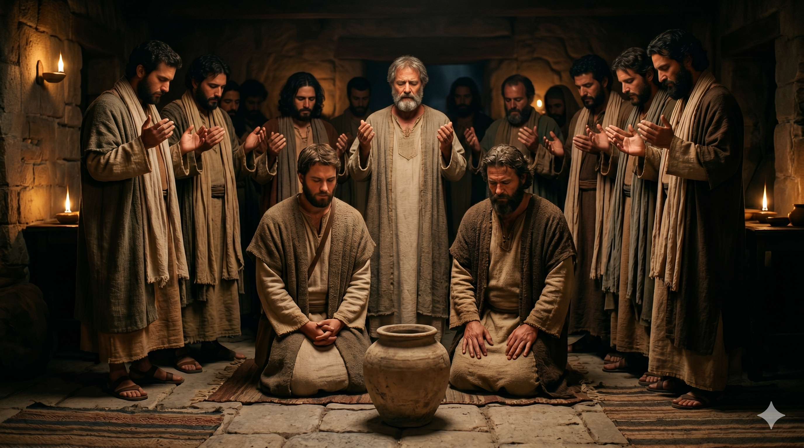

예루살렘 다락방 안, 백이십여 명의 제자들이 모인 가운데 베드로가 일어서서 말씀으로 공동체를 이끄는 장면. 무거운 슬픔과 새로운 결단이 교차하는 분위기.
그 때에 베드로가 형제들 가운데 일어서서 이르되 형제들아 성령이 다윗의 입을 통하여 예수 잡는 자들의 길잡이가 된 유다를 가리켜 미리 말씀하신 성경이 응하였으니 마땅하도다. 이 사람은 본래 우리 수 가운데 참여하여 이 직무의 한 부분을 맡았던 자라. 제비 뽑아 맛디아를 얻으니 그가 열한 사도의 수에 들어가니라. — 사도행전 1:16-17, 26
예수님이 승천하신 직후, 제자들은 예루살렘 다락방에 함께 모여 있었습니다. 그 수가 약 백이십 명이었습니다. 이 자리에서 베드로가 처음으로 공동체의 지도자로 나서 발언합니다. 불과 얼마 전까지만 해도 세 번 주님을 부인하고 통곡했던 그 베드로가, 이제 흩어질 뻔한 공동체의 중심에 서서 말씀으로 방향을 제시합니다. 베드로는 유다의 배반을 인간의 실패나 배신으로 규정하는 데 그치지 않고, 시편 말씀이 이루어진 것이라고 해석합니다. 비극을 하나님의 섭리 안에서 읽어내는 눈이 그에게 생겼습니다. 이것은 단순한 위로가 아니라 공동체가 넘어지지 않도록 붙드는 신학적 리더십이었습니다.
베드로는 유다의 빈자리를 채워야 한다고 제안하며 두 가지 자격 조건을 제시합니다. 세례 요한의 때부터 예수님의 부활까지 함께 다닌 사람, 그리고 부활을 직접 목격한 증인이어야 한다는 것이었습니다. 이 기준은 단순히 제도적 자리를 채우기 위한 것이 아니라, 사도직의 본질이 "부활의 증인"임을 명확히 한 것입니다. 기도 후 제비를 뽑아 맛디아가 선택되었습니다. 제비 뽑기는 무작위가 아니었습니다. "주님, 이 두 사람 중에 누가 이 직무를 받아야 할지 보여 주소서"라는 기도와 함께한, 하나님의 뜻을 구하는 신성한 결정이었습니다. 오순절 이전, 아직 성령이 충만히 임하기 전 이 공동체는 기도와 말씀과 사람들의 협의로 하나님의 뜻을 분별하고 있었습니다.

제비 뽑기를 마치고 맛디아가 열한 사도 가운데 자리에 앉는 장면. 공동체가 새로운 출발을 준비하는 엄숙하고 조용한 순간.
베드로의 이 리더십에서 우리가 주목해야 할 것은, 그가 먼저 공동체의 상처를 말씀으로 해석해 주었다는 점입니다. 유다의 배반은 공동체 전체를 흔들 수 있는 충격이었습니다. 그러나 베드로는 시편 말씀을 펼쳐 "이것이 하나님의 계획 안에 있었다"고 선언했습니다. 우리가 살아가다 공동체에서 배신이나 아픔을 경험할 때, 그 사건을 말씀의 빛 안에서 다시 해석하는 사람이 필요합니다. 그 사람이 바로 오늘 당신일 수 있습니다. 무너진 자리를 보고 낙심하는 것이 아니라, "하나님이 이 자리를 채우실 것"이라고 선언하며 다음 걸음을 준비하는 사람이 되십시오.
또한 베드로는 자신의 판단으로 누군가를 임명하지 않고, 기도와 말씀의 자격 기준을 세운 후 하나님께 맡겼습니다. 이것이 진정한 섬기는 리더십입니다. 내가 고르는 것이 아니라 하나님이 선택하시도록 자리를 만들어 드리는 것, 그것이 공동체를 살리는 지도력입니다. 우리는 일상 속에서도 이런 태도를 연습할 수 있습니다. 중요한 결정 앞에서 먼저 기도하고, 기준을 말씀에서 찾고, 결과를 하나님의 손에 내려놓는 것—이것이 베드로에게서 배우는 오늘의 교훈입니다.
넘어졌던 사람이 일어나 공동체를 세웁니다.
비극을 섭리로 읽는 눈이 지도자를 만듭니다.
당신의 자리에서 흩어진 조각을 모으는 사람이 되십시오.